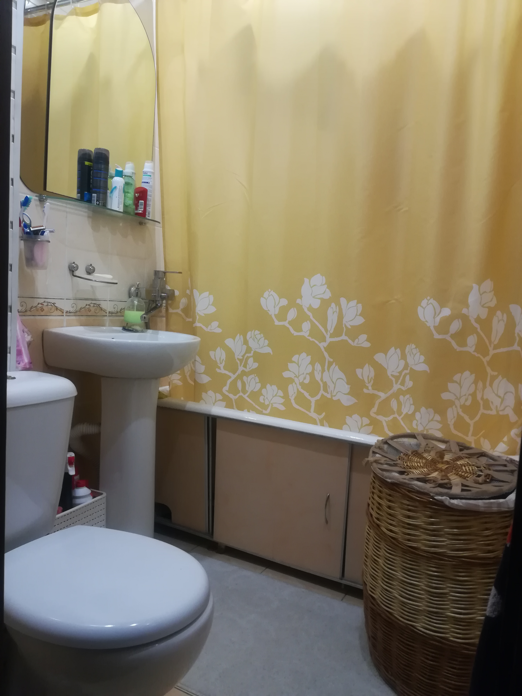

Продается двухкомнатная квартира на Берута, 16-2 (4-й этаж пятиэтажного дома)
Превосходный вариант для семьи с ребенком
Квартира: полноценная двухкомнатная с двумя раздельными комнатами

В квартире выполнен ремонт в светлых тонах, создающий одновременно уют и простор. Не было и нет домашних животных.
Можно заселиться сразу же. При необходимости можем (за отдельную плату) оставить всю мебель (Involux), бытовую технику (Bosch, Ariston) и др. (см. в конце страницы).
Состояние квартиры видно на фотографиях.
Прихожая


Спальня


Гостинная


Кухня


Ванная комната

Балкон


Окна выходят на запад. В квартире светло, в солнечную погоду можно воспользоваться роль-шторами и жалюзи на балконе
(оставляем, входит в стоимость квартиры).
Интернет, телефон и телевидение
Помимо стандартного телевидения можно пользоваться:
-
Белтелеком: Интернет + безлимитные звонки на городские телефоны по Беларуси + Zala (пользуемся мы сами).
Можно подключить:
-
A1/Velcom + Voka (были довольны тогда еще Атлант-Телекомом на Асаналиева, но A1 появился только через год после переезда -
уже не было смысла менять, т.к. нас устроил Белтелеком).
Дополнительные опции
За отдельную плату помимо того, что остается в квартире можем оставить:
Мебель (Involux)
Шторы (специально пошиты для спальни и гостинной)
Люстры (спальня и гостинная).
Ковры (подобраны по размеру).
Посудомоечную машину Bosch.
Стиральную машину Ariston (производство Италия)
Сигнализацию (договор с департаментом охраны МВД)
Систему видеонаблюдения.
Дом и двор - см. здесь
Местоположение - см. здесь